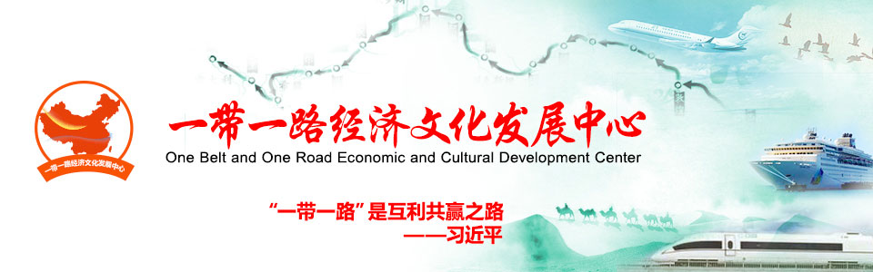

丝路经济动态
李克强提出抓紧规划建设“一带一路”
2014年3月5日，国务院总理李克强在《政府工作报告》中介绍2014年重点工作时提出，抓紧规划建设丝绸之路经济带、21世纪海上丝绸之路，推进孟中印缅、中巴经济走廊建设，推出一批重大支撑项目，加快基础设施互联互通，拓展国际经济技术合作新空间。
共建“一带一路”，打造全球经济新的增长极
5月9日至11日，联合国欧洲经济委员会在香港城市大学举行政府和社会资本合作（PPP）国际论坛，就PPP在联合国2030年可持续发展议程上的角色、PPP对推进“一带一路”的作用等问题进行深入探讨交流。多名中外专家9日出席论坛时表示，“一带一路”倡议倡导的基础设施互联互通，契合全球对可持续发展的需求，也为PPP提供契机。
刘卫东：“一带一路”有力推进经济全球化变革
“‘一带一路’是一个‘道’（即新的合作理念和思维），这个道的关键词就是包容性全球化。”刘卫东在过去两年里一直在讲包容性全球化这个话题。“一带一路”提出三年多来，他认为，最大的变化是由中国倡议转变为全球共识。
专家：“一带一路”将促进全球发展成果共享
全球范围内的均衡发展，比单纯实现经济增长更为复杂。因为这不仅涉及到全球宏观经济层面的全局性优化，也与中观或微观层面的产业结构变迁、就业及居民收入增长等问题息息相关。在中国改革开放过程中，在实现人民群众共享发展成果方面走在了世界的前列，也积累了非常宝贵的经验。
解码“一带一路”：共商共建 共享繁荣
央视网消息：“一带一路”倡议是中国为全球经济复苏提出的“中国方案”，得到国际社会的广泛关注和积极响应。倡议三年多来，一批有影响力的标志性项目逐步落地。中国与沿线各国的合作有哪些特点？为什么会有40多个国家将本国发展战略与“一带一路”倡议对接？一起来看今天的《解码“一带一路”》。